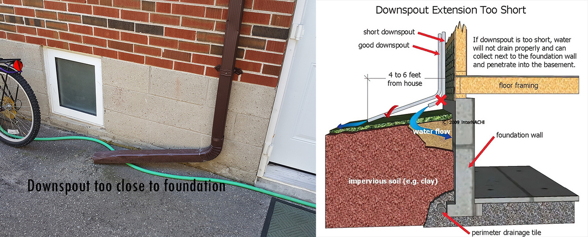
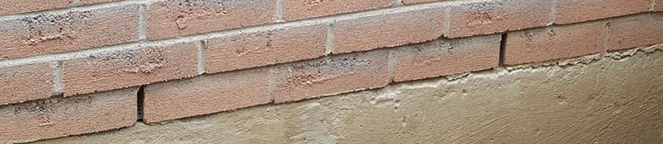
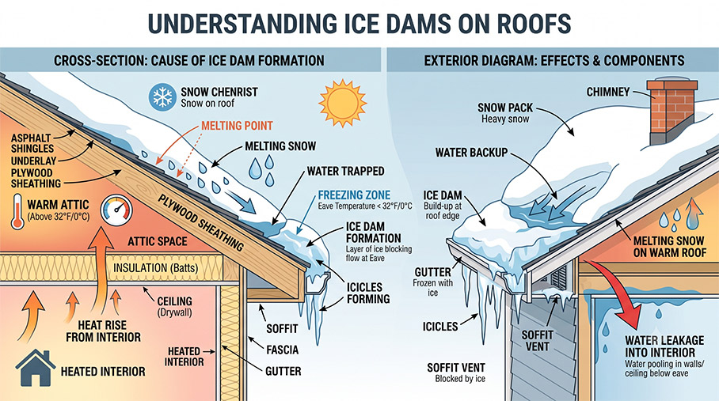
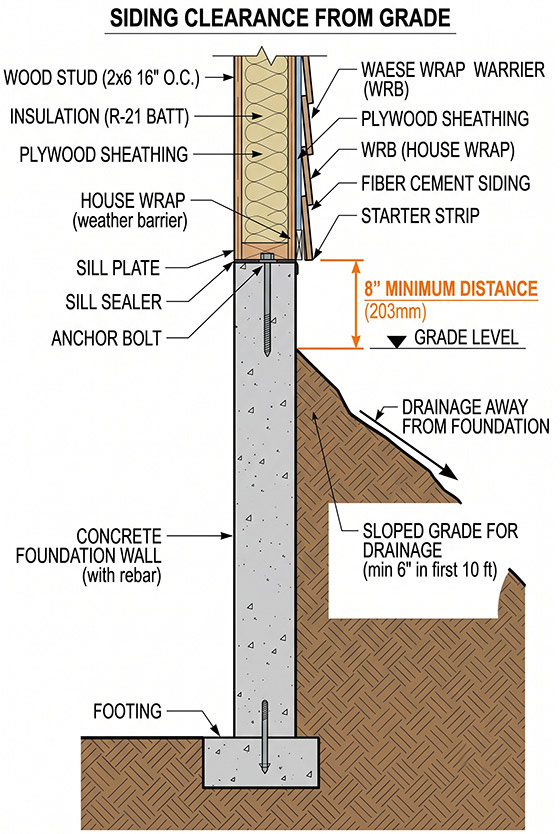
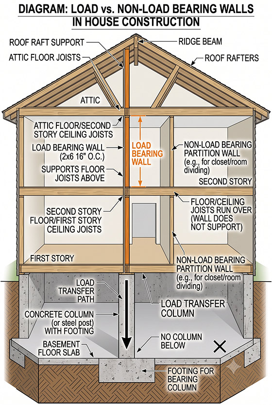

-
At Home Inspector M.D. Inc., we emphasize homeowner knowledge. Your house, like the human body without proper maintenance, can break down and fail. Archived here, you will find various useful tips that can help maintain the safety and condition of your house.
Too short downspout extensions
One of the most common issues inspectors find in most homes is too short downspout extensions.
Why? Bad installation. Many expel water too close to the foundation wall, thus potentially causing foundation leaks or settlement of the house. A result that will cost thousands of dollars to repair. How? For optimum results, we recommend a rigid sloped downspout extension that exits water about 4 to 6 feet (1.83 m) away from the sides of the house. Proper downspout extensions combined with the proper slope of the soil around the house can dramatically reduce water penetration into the basement.
How can you tell if there is enough insulation in the attic outside the house?
This tip is just an indicator, not a confirmation of an issue. During winter, shortly after a snowfall, look around your neighbourhood. if all the roofs have snow on the same side, simply look for the roof that has little or no snow on it. A poorly insulated ceiling will result in so much heat loss that it will melt the snow on the roof.

-
What are those holes at the bottom of my brick veneer wall?
If you have brick veneer siding, you may have noticed repeated holes at the base of the brick siding.
Should I plug those holes?In short, no. The holes (every 3-5 bricks) should be there, and you may also see them at the bottom of windows or doors. They are called weep holes.

Your brick siding is not waterproof, and thus water may seep through. The weep holes work with an air gap between the brick siding and the wall framing to promote drying behind the brick siding.
With an air gap, moisture can exit through the weep holes at the bottom of the wall. If you block these holes, you prevent drying behind the bricks, which could result in moisture damage to the house.
-
The hidden meaning of icicles
Visually, icicles hanging off a roof look stunning, but they may be telling you there are issues in your attic and roof.
Why? Icicles can be the result of “ice dams”. Ice dams occur when there is too much heat escaping from the ceiling to the attic and poor ventilation. This melts the upper parts of the roof, and the water then refreezes near the colder part near the edge (eaves) of the roof.
How? This can cause physical damage to the eaves but also can allow leaks through the roof, so minimizing ice dams is important. During winter, icicles and staining on the siding are a tell. During the summer, does the house you are looking at have electrical heating wires on the roof, or do you see physical damage at the eaves from shovels? Preventing ice dams from occurring means having proper roof ventilation and insulation in the attic.
-
Keep siding above grade
One of the most fundamental rules in keeping a house dry is having a gradual slope away from the foundation walls. Circle your house and note if there is any slope grading in the soil or concrete sides.
Why? Your siding plays an important role in protecting your house from moisture penetration. Having your siding (stucco, masonry, metal, vinyl) away from grade is essential in protecting it from moisture damage, spalling, rotted wood, or rusted fasteners.
How? As a general rule, look for about 8" minimum clearance from grade for stucco/wood/metal/vinyl, and 6" minimum for masonry. For brick veneer, this is critical because the soil may cover the weep holes in the siding, preventing proper drying out of moisture behind the brick.
-
How do you know what are the load-bearing walls?
You do not knock on them. The sound of the load and non-loading bearing wall is no different. There are various ways to find out, but we are just going to concentrate on providing you with the idea of what a load-bearing wall is. A load-bearing wall is a concentrated load that is carried continuously from the top, straight down to the bottom (footing) of the house. For example, if a wall on the main floor does not have a wall or columns underneath it in the basement to transfer the concentrated load to the footings, then it is most likely not a load-bearing wall. The load-bearing wall on the main floor would have supports directly above and below.
Important! Always consult a structural engineer and contractor to confirm load-bearing walls and what is required to remove them. Never remove walls without confirmation from a professional.
-
Simple things you can do to Maintain the Exterior of your Home
We look into the various ways to easily maintain the exterior of your home. Home inspector M.D. is based on the analogy that our house is like a person. We all must maintain our bodies year after year, but don't ignore maintaining your house year after year, or else it will start to break down and end up costing you thousands in repairs.